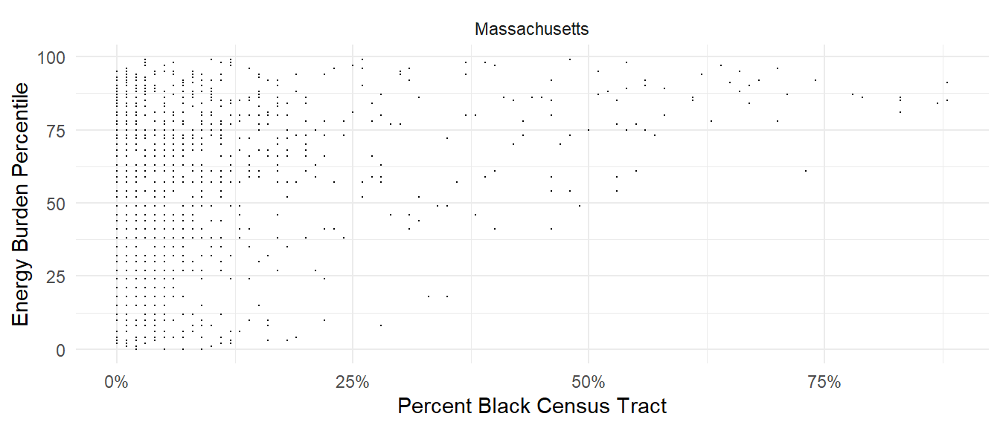

CEJS Activity
These are instructor notes; they will be removed from the student-facing assignment file.
This is the Frequentist form of the activity.
Overview
(Preview the overview figure)
- Florida and Massachusetts have a clear positive trend; this is evidence of inequitable outcomes
- Colorado has a negative trend; this is a surprising result
Analyze a Frequentist Model
(Introduce the Frequentist model)
[ B = m P + b, ]
where \(B\) is the energy burden percentile, \(P\) is the percent black, \(m\) is the slope parameter, and \(b\) is the intercept parameter.
Study the MLE estimates
(Introduce the MLE estimates)
| Term | Lower | Estimate | Upper |
|---|---|---|---|
| Intercept | 49.4 | 50.8 | 52.2 |
| Slope | 43.1 | 52.5 | 61.8 |
- Do the CI exclude zero?
Assessing confidence
TODO teach students how to do this through an example
Study the MLE predictions
(Describe posterior predictions)

- How well do the posterior predictions agree with the data?
Colorado
Study the MLE estimates
(Introduce the MLE estimates)
| Term | Lower | Estimate | Upper |
|---|---|---|---|
| Intercept | 24.4 | 26.1 | 27.8 |
| Slope | -48.9 | -24.3 | 0.3 |
- Do the CI exclude zero?
Study the MLE predictions
(Describe posterior predictions)

- How well do the posterior predictions agree with the data?
Florida
Deal with Limited Data
(Spin a yarn about how FL might redact their data)

Study the MLE estimates
(Introduce the MLE estimates)
| Term | Lower | Estimate | Upper |
|---|---|---|---|
| Intercept | 30.7 | 42.2 | 53.6 |
| Slope | 5.3 | 51.4 | 97.6 |
- Do the CI exclude zero?
Study the MLE predictions
(Describe posterior predictions)

- How well do the posterior predictions agree with the data?